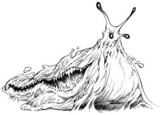
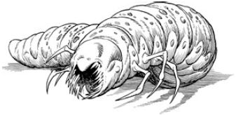
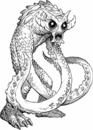
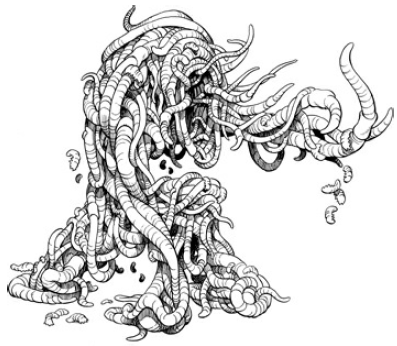

Demoni

I demoni sono esseri malevoli, interdimensionali che viaggiano tra i mondi, distruggendo tutto ciò che incontrano sul loro cammino. Ritornano alla loro dimensione natale, il Vuoto , quando muoiono nella loro forma corporea. Religiosamente, sono definiti come gli abitanti dell'Inferno e i servi di Lucifero .I demoni esistono in una grande varietà di specie e forme e si dice che il loro numero sia infinito.
Il compito primario degli Shadowhunters, la missione affidata da Raziel, è eliminare il flagello demoniaco ricacciando i demoni, una volta per tutte, nel Vuoto dal quale sono venuti.
Descrizione
I demoni non sono creature viventi nell'accezione che attribuiamo di solito a questa parola. Sono alieni al nostro universo e non sono sostenuti dallo stesso tipo di forze che sostengono noi. Non hanno anima; ad alimentarli è un'impetuosa energia demoniaca, una scintilla vitalizzante che mantiene la loro forma nella nostra dimensione. Quando i demoni muoiono, questa energia viene separata dal suo involucro fisico, che è rapidamente ricacciato nella sua dimensione. Agli occhi umani, questa scomparsa può assumere varie forme a seconda della specie del demone. Alcuni esplodono riducendosi in polvere, altri spariscono dalla vista, altri ancora si accartocciano su se stessi. In ogni caso, però, nel nostro mondo non rimane alcun residuo della loro natura fisica. Nella dimensione terrestre, i demoni assumono forme diverse, anche se non si sa se si tratti della loro vera forma. I demoni sono facilmente riconoscibili a meno che non siano mutaforma, noti come Eidolon. Assumendo quasi sempre sembianze mostruose sulla Terra, i demoni possono anche essere solitamente individuati dalla strana e nauseante sensazione che li circonda come un'aura oscura. Oltre alla loro generale bruttezza, i demoni spesso portano con sé un debilitante odore di morte che può essere molto forte. I corpi dei demoni sono mantenuti freschi e vivi dall'icore . Il loro icore, infuso con energie demoniache, è nero con una leggera sfumatura verde. È viscoso, al contrario del sangue dorato degli angeli, ed è più sottile del sangue umano ma opaco. Sebbene l'icore non sia generalmente pericoloso, è in qualche modo tossico, e alcuni sono acidi e possono bruciare ciò che toccano. Mentre la solita gamma di Marchi protettivi protegge gli Shadowhunters da questo, molti demoni sono comunque velenosi, in cui la runa curativa iratze è inefficace.
Classificazione
La demonologia è uno studio complesso che caratterizza in primo piano l'addestramento dei Nephilim. Occorre pertanto distinguere le due principali categorie dei demoni: demoni superiori e demoni comuni.
Demoni Superiori
"I Demoni Superiori" hanno alcuni aspetti in comune: intelligenza, personalità e nomi di livello umano. Sono considerati la classe superiore nella gerarchia demoniaca. Per quanto ne sanno gli Shadowhunters , i Demoni Superiori non possono essere distrutti in modo permanente con nessuna arma angelica disponibile. La Teoria del Vuoto degli Shadowhunters afferma che la loro distruzione frantuma semplicemente la loro forma fisica in un milione di pezzi tra i mondi, o gli spazi nel Vuoto , dove esiste il suo corpo etereo. Sebbene possano impiegare secoli per riformare e ricostruire la loro forma fisica, alla fine ci riescono. Quando vengono evocati o costretti a riformarsi, rimangono deboli per decenni. Per essere veramente uccisi, i Demoni Superiori devono essere sconfitti sia nella loro forma fisica che in quella eterea.
Tra i Demoni Superiori ci sono nove Angeli Caduti classificati al più alto livello della gerarchia demoniaca: i Principi dell'Inferno , o Fati. Si dice che questi nove siano potenti quanto Raziel , e che conquistino e collezionino mondi. Ogni Principe governa il proprio regno dell'Inferno.
- Asmodeus: il sovrano di Edom , insieme a Lilith , e un generale dell'esercito dell'Inferno. È il demone della lussuria.
- Astaroth: approfitta di chi è in lutto e induce gli uomini a mentire.
- Azazel: Luogotenente dell'Inferno e Forgiatore di Armi, Azazel è secondo solo a Lucifero stesso. È considerato un corruttore degli umani, avendo insegnato all'umanità come creare armi.
- Belial: un principe dei negromanti e degli stregoni e il più grande dei demoni Eidolon . Non può camminare tra gli uomini ed è un ladro di reami.
- Belphegor : il principe della pigrizia, degli imbroglioni e dei ciarlatani.
- Leviathan: il demone dell'invidia e del caos, che viene raramente evocato. È l'unico principe che non è un angelo caduto ed è sempre stato considerato un mostro.
- Lucifero: noto come il Portatore di Luce e la Stella del Mattino, si presume fosse un Arcangelo prima della sua caduta. Lucifero è noto come il Diavolo, il Sovrano dell'Inferno e dei Demoni, un individuo che combatte una guerra senza fine con Dio per le anime degli uomini.
- Mammona: il principe dell'avidità e della ricchezza che può essere corrotto, si ritiene che gestisca la banca dell'Inferno.
- Sammael: Si ritiene che sia stato il grande Serpente da cui tutta l'umanità fu tentata e gettata in disgrazia. Ma la sua forma fisica è un mistero, perché non è più stato visto sulla Terra da molte centinaia di anni. Stando alle storie tradizionali, Sammael fu cacciato e ucciso dall'Arcangelo Michele, a capo delle schiere del Cielo, per il crimine di aver indebolito i veli tra il mondo umano e il Vuoto facendo così entrare i demoni nel mondo.
Antichi:
- Abbadon: Il Demone dell'Abisso. Suoi sono gli spazi vuoti tra i mondi. Suoi sono il vento e l'oscurità assoluta. È uno scheletro umano putrefatto alto circa due metri.
- Lilith: la Madre degli Stregoni, e la prima donna ad essere creata che lasciò Adamo e fu maledetta a vedere tutti i suoi figli morire. È nota per essere il demone progenitore.
Demoni minori
"Demoni minori " è il termine usato per riferirsi ai demoni senza identità o intelletto e che sono così comuni da rientrare in una specie o classificazione particolare.Ecco alcune specie più comuni:
- Behemoth: Il Behemoth è un mostruoso demone informe. È più o meno oblungo e nei movimenti si potrebbe definire simile a una lumaca, ma con una forma meno precisa. È grande, molto più grande di un umano, e viscido. Lungo il corpo gli corrono doppie file di denti. Il Behemoth divora tutto ciò che incontra sulla sua strada, comprese le persone.

- Drevak: demoni deboli spesso usati dai Demoni Superiori o dagli stregoni malvagi come spie o messaggeri. Sono lisci, bianchi e larvali e ricordano la versione gigante di un bruco o di una larva mondana. Sono ciechi e inseguono le loro prede servendosi dell'olfatto. Il fatto che non abbiano una forma definita e un'intelligenza non significa che non siano pericolosi; invece di denti le loro bocche sono munite di spine velenose che possono essere molto pericolose se si staccano e si conficcano nella pelle di una vittima.

- Eidolon: Eidolon è il termine generalmente usato per riferirsi a una dozzina di specie di demoni mutaforma. La vera forma di un demone Eidolon è bianca, untuosa e viscida come una lumaca, con il corpo ricoperto di macchie grigie. Una sottospecie nota del demone è il Du'sien. A causa della natura della loro abilità, i demoni Eidolon sono diventati il mezzo dominante con cui gli stregoni vengono concepiti. Inoltre, mentre sono in forma umana, gli Eidolon sono in qualche modo in grado di sopportare la luce diffusa del sole.
- Iblis: Il demone Iblis è corporeo, ma non di forma solida. Ha l'aspetto di una figura all'incirca delle dimensioni e della conformazione di un umano, ma è fatto di nero fumo vorticante e ribollente.
- Raum: Il Raum è un demone terribile e pericoloso, incapace di parlare, ma ciò nonostante piuttosto in gamba come avversario. I Raum sono grandi all'incirca come un uomo, ma hanno una pelle bianca a scaglie, occhi neri sporgenti senza pupille, una bocca perfettamente circolare e tentacoli al posto delle braccia. Questi tentacoli sono l'arma più pericolosa dei Raum; in punta hanno delle cavità rosse, ognuna delle quali contiene un anello di piccoli denti simili ad aghi.

- Shax: Questi demoni sono noti per il senso dell'olfatto particolarmente acuto e a volte vengono evocati dagli stregoni che se ne servono per rintracciare una persona scomparsa. Comunque, vanno tenuti sotto stretto controllo; sono parassiti di cova e si riproducono ferendo una vittima e deponendo le uova nella sua pelle mentre è ancora viva.
- Vermithrall: A prima vista il Vermithrall sembra una massa mostruosa che si trascina pesantemente, composta di migliaia di vermi che si contorcono. In realtà, i Vermithrall sono i singoli vermi stessi, che si raccolgono in colonie nella forma di umanoidi e attaccano come una singola entità raggruppata. La cosa peggiore è che i vermi separati dal corpo principale cercheranno di riunirsi a esso, rendendo molto difficile uccidere definitivamente un Vermithrall.
